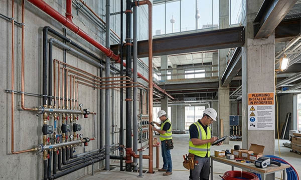

Plumbing installations—including heating, ventilation, and sanitation—are a critical part of building functionality and comfort across Germany, as well as France, Italy, Switzerland, the UK, Norway, Austria, Poland, and the Benelux countries. These systems regulate indoor climate, ensure water supply and drainage, and control heating and cooling, creating a safe and pleasant environment for residents, employees, or industrial operations.
Clear pipe labeling and plumbing signage is essential for proper maintenance, troubleshooting, and operational safety. Engraved labels, type plates, industrial plates, CE marking plates, and HVAC labels allow technicians to quickly identify pipelines, water flows, and system components. Correct labeling ensures compliance with DIN, VDE, and European standards while keeping installations organized and easy to maintain.
SignXpert provides high-quality, durable pipe marking, signs, and decals tailored for plumbing installations. With fast delivery across Germany and Europe, our solutions help property owners, maintenance teams, and installers maintain a well-structured, safe, and efficient plumbing system.
Plumbing Installations: Essential for Comfort, Safety, and Functionality.
Plumbing systems are central to a building’s comfort and operation. They manage water supply, drainage, heating, cooling, and ventilation, ensuring a stable and comfortable indoor environment. Properly executed installations provide reliable water flow, efficient heat distribution, and optimal air quality. For residential, commercial, and industrial buildings, high-quality plumbing is essential for comfort, safety, and long-term sustainability.
Using pipe labeling, engraved labels, type plates, and industrial plates, technicians can clearly identify hot and cold water lines, drainage pipes, and HVAC components. This clarity improves maintenance efficiency, reduces errors, and extends the life of the system.
Safety and Efficiency Through Clear Pipe Labeling.
In complex plumbing systems, clear pipe marking and signage is critical. Labels allow maintenance personnel to distinguish between different pipelines and components, minimizing the risk of accidents or service errors. Properly marked pipes, including hot & cold water labels, HVAC labels, and drainage indicators, provide safety in industrial and commercial environments.
During emergencies, clear marking allows quick understanding of system layouts, aiding rapid response and reducing downtime. Durable, visible labels ensure that plumbing installations remain safe, organized, and easy to manage over time.
Environmental Benefits and Energy Efficiency.
Modern plumbing installations improve energy efficiency and reduce environmental impact. Systems designed to optimize water and energy use help lower operating costs and carbon emissions. Examples include automatic heating adjustments, heat recycling, and water-saving components.
By choosing sustainable and efficient plumbing solutions, property owners not only protect resources but also meet European standards for energy efficiency and environmental responsibility. High-quality engraved labels, industrial plates, and CE marking plates support long-term system performance while contributing to a greener future.
Why SignXpert is the Leading Supplier for Plumbing Labeling.
SignXpert offers a full range of pipe labeling, plumbing signage, engraved labels, type plates, industrial plates, and CE marking plates for plumbing installations across Germany and Europe. Our fast delivery ensures both planned and urgent projects are completed on schedule.
Through our user-friendly online system, customers can customize labels by text, size, material, and layout. Products are designed for durability, visibility, and compliance with DIN, VDE, and European standards, ensuring reliable and long-lasting labeling.
By choosing SignXpert, property owners, installers, and maintenance teams receive a cost-effective, high-quality solution for safe, organized, and efficient plumbing installations across Germany, Austria, Switzerland, France, Italy, the UK, Norway, Poland, and the Benelux countries.